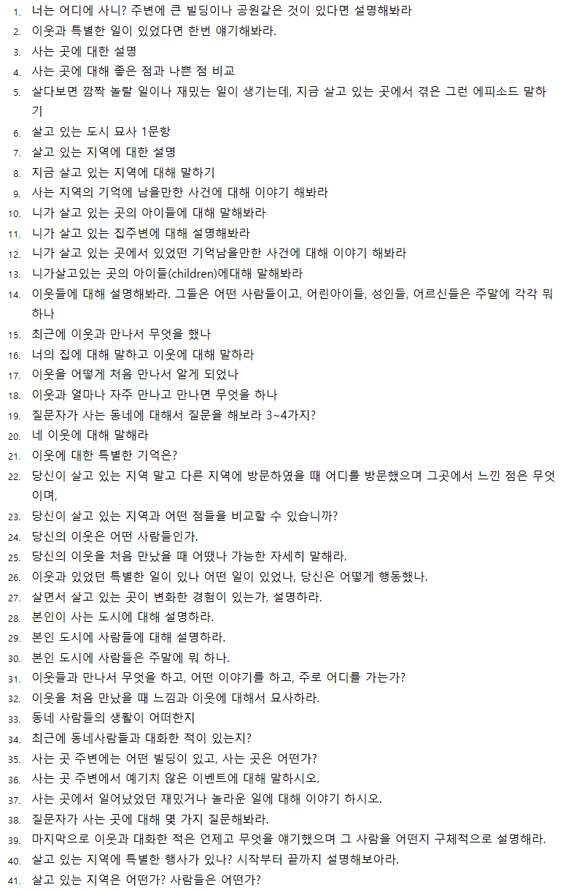

- Background Survey
- Sudden Question
Background Survey
분야별 예시문제보기
모든 분야에 대한 예시문제가 있는 것이 아니라 주로 많이 선택되는 문제들을 모았다.
* 주의 > 분야별 예시 문제들은 필자가 공부를 위해 웹상에 떠도는 기출/예시 문제를 무작위로 수집한 것으로, 대략적인 출제 경향을 확인하는 용도로 사용하기 바란다. 또한 영어로 된 예문들은 문법적 오류가 있을 수 있음을 밝힌다.
- 주거 / 동네 / 이웃
◇ Please tell me about your house. What's your favorite room? What does it look like? Why do you like that room?
◇ Compare the home you lived in before to the one you live in now. What are the differences between those two homes? Provide me with as many detail as possible.
◇ Have you ever had any problems with your home? What was the problem, and how did you deal with it? How did the problem turn out? Give me as many details as possible.
◇ I would like to know about your neighborhood. What does your neighborhood look like? Please describe your neighborhood in as much detail as possible.
◇ Can you tell me about your neighbors? Describe on of your neighbors in detail. How did you first become acquainted with that neighbor? Are you close to the person? What do you usually do together?
◇ Please tell me about a memorable experience you have had in your neighborhood. When and where did it occur? What happened that made the experience so memorable? Please describe it in detail.

- 여가활동
* 영화보기 / 공연보기 / 콘서트 보기
비슷한 형식으로 내용만 다르게 나오는 경우가 많다.
◇ You indicated in the background survey that you go to the movies. How often do you go to the movies? Tell me when you go to the theater and who you go with.
◇ (좋아하는 장르) Please tell me about your favorite type of movie. Why is it your favorite?
◇ (좋아하는 장르) You indicated in the survey that you like movies. What genre of movies do you like the most? And why do you like them?
◇ (기억에 남는 경험) Please talk about a memorable movie you have seen. What is the movie about, and who is the main character? Why was it so memorable?
◇ (영화관람 전후 활동) please tell me about your typical day when you go to the theater. What are somethings you do before and after going to the theater? Tell me everything.
◇ 가족, 친구들과 영화에 대해 이야기 할 때 무엇에 대해 이야기 하는가?
◇ (얼마나 자주 콘서트에 가는지) How often do you attend concerts? Who do you go to the concerts with? How do you determine which concerts you plan to attend?
◇ Now tell me the typical day whem you go to the concert. Tell me everything you do from beginning to the end.
◇ Tell me about the recent concert you went to. When was it? Where did it take place? Who played at the concert? How did you like it?
◇ How has your interest in music changed for the last few years? What kind of music did you like 5 years ago? What kind of music do you like now?
- 취미와 관심사
악기연주
어떤 악기를 연주하고, 어떻게 연주하고, 연습은 어디서 / 악기를 배우면서 연주하면서 어려웠던 점 / 누구에게 배웠는지, 얼마나 연주했는지, 정기적으로 연습을 얼마나 하는지 / 악기에 관심을 갖게 된 이유, 관심사가 어떻게 바뀌었는지
◇ You indicated in the survey that you play musical instrument. Describe your musical instrument.
◇ Please tell me why you first became interested in playing and instrument. Explain where and from whom you learned the instrument that you play.
◇ Tell me when you last performed and what you performed. Explain how the performance went in as much detail as possible.
◇ In the survey, you indicated that you often paint or draw. Describe what kind of paintings you like to make.
◇ Give me an example of a drawing or painting experience that stands out in your mind. Maybe tell me about something you made that you are proud of.
음악감상하기
좋아하는 가수 / 좋아하는 장르 / 나의 음악 감상 활동 경향(습관) / 음악 취향의 변화 / 서로 다른 가수, 혹은 장르에 대한 비교
- 운동
◇ When did you first become interested in jogging? Why did you start? Has your physical condition changed since you started jogging? How has it changed?
◇ Do you have a specific place you like to go for jogging? Where is it located? Why do you go to this specific place? Provide me with as many details as possible.
◇ Has anything memorable or special ever happened while you were on a walk? When was it and what happened? Where were you when this happened? Who were you with?
◇ 조깅하다 다친 경험 / 다치지 않기 위해 하는 것들 / 조깅할 때의 습관 등
- 휴가 및 출장
◇ What is the most memorable experience you have had while traveling? When and where did you go? What happened? Why was it memorable? Describe the experience in detail.
◇ In you background survey, you indicated that you enjoy domestic travel. Where do you like to visit? Which do you prefer, mountains or beaches? Describe the place you like to visit and why do like to go there.
◇ People must prepare before they travel. What do you do to prepare for travel? Do you research in advance or make reservation? What special thing do you do? Please describe your preparations in details.